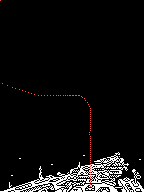
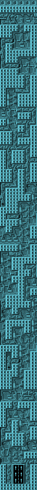
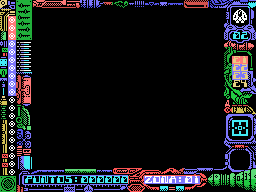
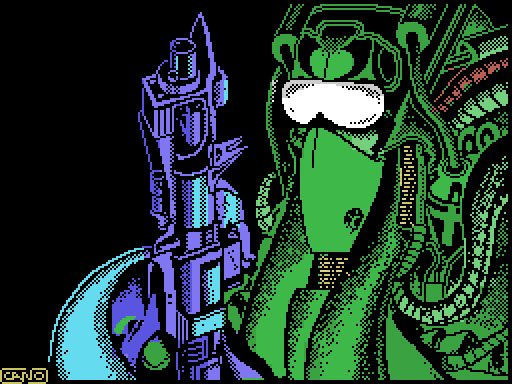

Stardust is a ZX Spectrum conversion, and that much was known. What wasn't expected on opening the tape is how far the conversion goes: they didn't bring the graphics across and rebuild the rest, they brought the recording system, the load routine and the way of drawing. What follows is what turned up on taking it apart, each thing with the evidence that holds it up.
The ZX Spectrum authors warn in their own repository that the MSX version was done by other people. The game answers the question itself, in its credits screen, at 0xF124:
CONVERSION POR
CARLOS ARIAS
GRAFICOS
JUAN CARLOS Y JAVIER AREVALO
...ADEMAS DE...
JULIO MARTIN
MUSICA COMPUESTA POR
GOMINOLAS
BASADO EN
UNA IDEA ORIGINAL
JOSE MANUEL MU&OZ
TOPO SOFTThe conversion is Carlos Arias. The graphics stay with the Arévalo brothers, the same as the original version, which fits with the artwork having been carried over as it stood.
MSX games are recorded in KCS blocks, the system's own format: the BIOS writes them and the BIOS reads them.
Not Stardust. Its four data blocks are ZX Spectrum blocks, with the structure from over there: a flag byte, the data, and a final byte that is the XOR of everything before it. All four carry that checksum correctly, verified one by one; it is the only integrity check the tape has.
And the loader is a reimplementation of LD-BYTES, the Spectrum ROM's load routine, with the same register interface:
ld ix,047a0h ; IX = where it goes ld de,0b647h ; DE = how many bytes ld a,000h ; A = the flag expected scf ; carry set = load, don't verify call 0405ch
Anyone who has programmed a Spectrum will recognise that call: it is the one at 0x0556 in its ROM, parameter for parameter.
Before loading anything, the loader does something an ordinary MSX game would never need to: it hunts for RAM and maps it into pages 1 and 2.
ld hl,04000h / call sub_d30fh ld hl,08000h / call sub_d30fh
The routine at 0xD30F tries writing into each slot with ENASLT (the BIOS call at 0x0024) until it finds RAM. The reason is that the Spectrum has 48K of flat RAM and the MSX doesn't: on the MSX the lower half of memory is taken by the BASIC ROM. For the ported game to find memory where it expects it, the ROM has to be got out of the way.
This is the best one. Before starting the game, the loader copies 94 bytes from 0xDAC0 to 0xFDE8 —high memory, where nothing is going to overwrite them— and then looks at what is in them:
4040: ld hl,0fde8h / ld b,003h 4045: ld a,(hl) / cp 0c9h / jp nz,0bd85h ; three 0xC9 as a signature? 404e: ld b,(hl) ; B = how many patches 4050: ld e,(hl) / ld d,(hl) / ld a,(hl) ; address and value 4056: ld (de),a / djnz 4050 ; apply them 4059: jp 0bd85h ; and now, off to the game
If those 94 bytes begin with three 0xC9, the loader treats them as a list of patches and applies them to the freshly loaded game. It is a factory-fitted POKE applier, inside the game's commercial loader.
And the arithmetic says how many it was built for: 3 bytes of signature + 1 counter + 30 patches of 3 bytes each = 94. Sized for exactly thirty.
That explains why the magazine loaders of the period worked so well with this game. The one in Input MSX number 19 writes with FOR I=56000 TO 56012, and 56000 is 0xDAC0: the mailbox. Its three patches, read out of the binary before applying them:
0xC06E/6F: 38 1F (jr c,+31) -> 18 EC (jr -20) 0xF7B1: 01 -> 00
The second changes the 1 of an ld a,001h into a 0. Applied by the game's own loader, the ship survived sixteen minutes straight.
This page used to say that patch "turns a conditional jump into an unconditional one, skipping a check". That was false, and the line right above it said so: the new displacement is EC, that is −20. The jump doesn't go forward skipping anything, it goes backwards, to 0xC070 − 20 = 0xC05C.
And at 0xC05C there were, until now, seven bytes declared "filler or remainder". They are not:
c05c: ld a,003h ; the shield c05e: ld (0c188h),a ; back to three c061: jr 0c08fh ; and on with the ship, as if nothing happened
So immortality isn't about dodging the explosion: it is that the shield is refilled to three on every single frame, faster than the game can spend it.
The striking part is whose routine that is. It is on the tape, and in the game as sold nobody calls it: its address does not appear even once among the 46,663 bytes of the block, and no relative jump lands on it. Seven bytes doing exactly what you would need in order not to die, sitting exactly twenty bytes away from the jump you have to patch.
That the authors left it there as a test switch is what it looks like, but that is a guess and it is stated as one. What is measured is the behaviour, and twice over: in the PC sampling of the long session —played with the trainer on— those three instructions show up 28, 13 and 33 times and the explosion's particle seeder not once; in the sampling of a session played by hand without the trainer, 0xC05C never appears and the explosion does.
On clearing the last ship zone a screen comes up reading
FELICIDADES HAS CONSEGUIDO PENETRAR LAS DEFENSAS DE LA NAVE INSIGNIA PERO LO PEOR AUN NO HA LLEGADO
and the game goes back to the cassette for the second part, the one on foot.
The interesting bit is how. The loader's load routine survives in page 1 for the whole game —the game loads from 0x47A0 up and doesn't tread on it— so the obvious thing would be for it to call that. It doesn't. The game brings its own, and that routine is a second port of the Spectrum's LD-BYTES, the same one the tape loader already reimplemented:
f7f6: ld hl,0f89fh / push hl ; the return address, pushed by hand f7fb: ld a,008h / out (0abh),a ; switches on the tape MOTOR f7ff: ld a,00eh / out (0a0h),a ; PSG register 14, the tape-bit one f804: inc d / ex af,af' / dec d / di ; LD-BYTES, opcode for opcode f808: ld a,005h ... ld hl,00415h ; and its very constant, 0x0415 f848: ld (ix+000h),l ; each byte read, stored through IX f887: in a,(0a2h) / cpl / xor c ; reads the tape bit back off the PSG f893: ld a,r / and 00fh / out (099h),a ; and flickers the border, via the ; VDP where the Spectrum used a port
Nor is it a copy of the loader's: its signature was searched for byte by byte across the three blocks and appears in none of them.
How it was settled. Starting from a savestate taken on the FELICIDADES screen and sampling the program counter every two milliseconds throughout the load: 84,441 samples, every single one inside 0xF7F6–0xF89E. Not one in ROM, not one in page 1. Meanwhile IX —the pointer that ld (ix+000h),l stores through— walks from 0x61D0 to 0xD674, which is exactly the last byte of a 29,861-byte block. The BIOS takes no part in this, and neither does the loader.
What is left in memory afterwards matches the tape's block to 99.78%: 66 bytes out of 29,861, in thirty short runs, and they are the variables the second part had already written by the time the dump was taken —among them the three 46-byte sound-channel states at 0xD068, 0xD096 and 0xD0C4.
This used to be written down here as an open contradiction, because a breakpoint on 0xF7F6 never fired while replaying a recorded playthrough. The explanation turned out to be mundane: that recording begins at the instant the loader is already running —its first frame has the program counter at 0xF849, inside the routine— so a breakpoint on the entry point has nothing left to catch. The 0xF89F sitting on the stack could only have been put there by the push hl at 0xF7F9.
The two halves of the game don't share an engine, and it shows in how they carry their creatures. In the ship part each entity points to its governing routine inside its 8-byte structure, and the game jumps there with a jp (hl): capturing those jumps with the game running, the IX values go up in 8s (0xCB3A, 0xCB42 · 0xC8D8, 0xC8E0…).
And that jp (hl) is really a call, not a jump, because the Z80 has no call (hl). What the game does is push the return address by hand:
ld hl,0cb9dh <- the return address push hl <- onto the stack, as a CALL would ld l,(ix+003h) ld h,(ix+004h) jp (hl) <- and off to the object's behaviour
Whatever ret ends that behaviour will land on 0xCB9D, the next instruction. It is an indirect call built out of two instructions.
And there is a finer touch still: when an object has nothing to do, instead of storing a null pointer and testing for it, the game installs **the address of a ret that already exists in the code** (0xD959). That way the loop never has to ask: it always calls, and the one with nothing to do returns immediately.
The foot part doesn't treat its enemies that way: they live in tables of 5 bytes per object —the walkers at 0xACE4, four at most; the flyers at 0xACF9; the turret's two shots at 0xAD04— and carry no routine pointer: fixed loops move them, one per species.
This page used to say "the IX values go up in 46s: entities almost six times bigger", from mistaking what its jp (hl) at 0xC544 dispatches for the enemies. The measurement was good, the reading wasn't. And now we also know what they really are: the sound interpreter's three channels.
The code says so, in the simplest way: the routine that starts a sound takes a channel number, multiplies it by 46 and adds a base to reach that channel's state. Both halves of the game carry that routine, identical but for the base:
ships and 07fh / ld de,0002eh / call ... / ld de,0ed75h on foot and 07fh / ld de,0002eh / call ... / ld de,0d068h
And 0xD068 is exactly where the mystery IX values landed. The arithmetic closes on both sides: three 46-byte channels from 0xED75 end at 0xEDFF, precisely the address the code loads for the interpreter's variables.
So that jp (hl) wasn't dispatching entities: it was dispatching music commands. It is the same interpreter in both halves, with its three channels.
What they do share is the craft of drawing. It is the Spectrum technique, from a machine with no hardware sprites: the image is shifted bit by bit with an unrolled run of adc hl,hl, a hole is opened with AND, and it is painted with OR.
(This page used to say that "comparing 40 bytes of the sprite routine of one part against the other, only six differ, and three of those are and (hl) against or (hl)". The measurement was right and the pairing was not: it was comparing the pattern run of one half against the mask run of the other, which are not twins but the two halves of the same routine. Paired properly the result is 26 bytes identical out of 28, and the only difference is one jump's operand.)
That last paragraph fell short. Looking at the rest of the service routines, it turns out they don't merely resemble each other: they are the same routines, copied and relocated. Five are identical byte for byte:
buffer_dir 0xC541 / 0xAACD 18 of 18 bytes solapa_eje 0xCD7A / 0xAEC2 12 of 12 hay_tecla 0xF660 / 0xD30B 16 of 16 mul_a_de 0xE591 / 0xC8A6 21 of 21 vram_pon_dir 0xEE24 / 0xD117 16 of 16
And in the rest, what turns resemblance into proof is where the differences fall: in pairs of consecutive bytes, which is exactly what a 16-bit operand measures. The sprite painter is 198 bytes long and 21 of them differ: twenty are ten addresses —the sprite pool, the row counter, the two jr instructions the routine patches in itself, the call to buffer_dir, the two jumps with which the shortcuts step over the runs, and the one that closes the row loop— and the twenty-first is a single loose byte, the bottom clipping limit, 0x50 in the ship stage and 0x4F in the on-foot one. Out of the whole routine, that is the only thing that really changes. The glyph painter, 144 bytes, gives the same shape: 13 differences, six addresses and that same byte again.
(This was published as "eleven of its 74 bytes differ". Those 74 were the first 74: the routine is 198. Measured whole, the conclusion doesn't just survive, it gets stronger, because the ten extra bytes are five more addresses. But the figure was wrong, and it spoke of "the whole routine" having looked at a third of it.)
In borra_buffer the four differences are that the di sits before the ld hl,0 / add hl,sp in one part and after it in the other. In the random generator, the four are the address of the seed, which appears twice.
Counted in bulk: searching for identical runs of 32 bytes or more between the two blocks yields 58 runs and 5867 bytes, of which 1200 fall in code. That figure is deliberately low, because every differing address splits a run in two.
There are also differences that aren't relocation but decision. gira_rumbo exists in both and does the same thing —bring the current heading one eighth closer to the requested one, the short way round— but the on-foot one is missing the part that consults a wait counter held in bits 3 and 4 before applying the turn. That is why the ship takes a few frames to tilt from one inclination to the next and the man on foot changes direction instantly.
With that, the sentence above can be sharpened: the two game engines are different, the service library is the same.
Video memory is organised in bytes, eight pixels at a time. To put a ship at column 173 the drawing has to be shifted inside the byte, and on a Z80 that costs. The game's answer is the period's answer: a run of shift instructions written one after another, entered at exactly the right height. The painter takes the low three bits of X and writes its own jump:
c494: ld a,l / and 007h / jr z,... the column falls flush c499: dec a / ld c,a / add a,a / add a,c / add a,007h (n−1)·3 + 7 c49f: ld (0c4c4h),a / ld (0c4fbh),a patches its two jrs
The 3 is the size of one rung (adc hl,hl is two bytes and adc a,a one) and the 7 is the size of the shortcut sitting in front of it. That way the jump lands on the right rung and exactly the needed steps remain.
And the steps run the opposite way to what you would expect. To move the drawing n pixels right, it takes 8−n steps left across a three-byte window: what falls off the top is precisely what has to show up in the neighbouring byte. With n=0 all eight would be needed, and those eight come free by shuffling registers around — that is the shortcut.
Looked at closely, the run doesn't shift: it rotates. A, H and L turn as a single 24-bit number, and it works as a shift because what wraps around is the padding. And the padding is the only thing that tells the two runs of each painter apart:
mask enters with A=0xFF and scf → pads with ONES (background shows) pattern enters with xor a → pads with ZEROS (paints nothing extra)
That is why it is the same code twice rather than one routine called twice: each lands somewhere different —the one that stamps with AND and the one that stamps with OR— and this is the inside of a sixteen-row loop, where a call and its return would be paid thirty-two times per sprite.
There are four ladders, two per painter —the sprite one works 24 bits wide, the lettering one 16—, and all four exist in both halves of the game, identical byte for byte except for one jump's destination:
mask 24 bits 0xC4C5 / 0xAA51 26 of 28 bytes pattern 24 bits 0xC4FC / 0xAA88 26 of 28 mask 16 bits 0xC590 / 0xAB1C 18 of 20 pattern 16 bits 0xC5B5 / 0xAB41 18 of 20
In the lettering painter the patch arithmetic is n·2 + 4 instead of (n−1)·3 + 7, because its rungs are two bytes and its shortcut six (it is the same formula written differently: n·2 + 4 is (n−1)·2 + 6). Written that way it says where the run begins: with n=1 the jump goes to 0xC5B5 + 6 = 0xC5BB.
At 0xC5BB there was no run: there was a range declared "filler or remainder". The run was recorded as starting at 0xC5C1 —its fourth rung— and the six bytes in front of it, ed 6a three times, were orphaned. With them, the ladder has the same seven rungs as the other three.
The interesting part is why it had gone unseen, because the measurement was not at fault: the program-counter dump had those three rungs at 40, 155 and 226 samples, more than plenty of addresses that had been declared. The data was there. What was missing was anybody crossing the measurements against the ranges declared as data: the guard that exists crosses data zones against the trace, and the tracer didn't reach there either.
Doing that cross-check by hand turned up two more ranges, and both were code: the seven bytes where the magazine's POKE lands —told above— and eight more at 0xE03D which turned out to be an object behaviour, installed as a pointer from two places in the block itself. Fifteen bytes sitting in the wrong column.
In both halves of the game there are two tables of things flying about, one per side: the player's trigger fills one, the enemies fill the other. What there isn't is a central detector crossing them. Every object, right after painting itself, asks whether it has been hit, always with the same routine, changing only the contact box and the price:
who asks box reward the enemy formation 4 × 0x0C 130 points the swarm objects 4 × 0x0C 140 an enemy shot 4 × 8 53 the ship (vs the other table) one point of shield
Careful reading those prices, because there is an easy trap here: the routine that pays doesn't add points, it adds to the digit it is pointed at, and the carry runs leftwards. So the same value is 130 points or 13 depending on which figure of the scoreboard it lands on. The 53 points for shooting down an enemy shot are identical in both halves of the game, same number and same digit.
With the power-up collected, the trigger releases four shots in a cross instead of one. And since every insertion into the table starts its own sound effect, four "pews" would fire at once. What the game does is **poke a ret into the second byte of the routine that starts sounds** before the three extra shots, and put it back afterwards.
The nice part is how it puts it back: there is no constant stored for it anywhere. It copies the byte from its twin routine, the one that starts scripts without hunting for a free channel, which has the same prologue. It borrows it from next door.
And there is a curious asymmetry between the halves: the on-foot stage has the same four-way shot and can never switch it on. The byte that decides is read in one place and written in exactly one, right after a xor a — so the only thing ever written to it is a zero. The three extra insertions are dead code in the version that shipped. It has no gag patch either: if the four shots ever did come out, all four would sound.
The tape chapter already told how the loader is a reimplementation of LD-BYTES, the routine the ZX Spectrum ROM uses to read from tape. And also that the routine with which the game loads its own second part is not a copy of that one: its signature was searched for byte by byte across the three blocks and it isn't there.
They are two different routines, but they come from the same place, and this one carries it written in its constants. Three numbers, each in its place and in the same order as in the original:
0x16 the delay in LD-EDGE-1 0x0415 the wait in LD-START 0x9C and 0xC6 the thresholds with which LD-LEADER recognises the pilot tone by measuring how long the pulse lasts
Even the split into two routines is the same: one calls the other and returns if it fails, which is what LD-EDGE-2 does with LD-EDGE-1. The only thing genuinely ported is reading the bit, because the Spectrum goes through in a,(0feh) and here it has to go through the PSG's register 14.
And as a bonus, the show: on every edge read, the routine feeds the border colour the masked refresh register (ld a,r / and 00fh), which is exactly the colour stripes the Spectrum makes while loading, mounted on the only place where an MSX has a border colour.
This is an identification by structure and by constants, not a diff: there is no Spectrum ROM in this repository to compare against. With three such specific numbers each landing in its place it is hard for it to be anything else, but it is worth knowing what kind of proof this is.
There is a difference of substance between the two machines that the conversion could not dodge. The Spectrum writes directly into its screen memory, which is ordinary RAM at 0x4000. On the MSX, video memory sits behind the graphics chip and cannot be addressed: it has to be sent byte by byte through a port.
So this version carries something the original doesn't need: a screen buffer in RAM, and a routine that dumps it. The buffer runs from 0x4000 to 0x4EFF: 3,840 bytes, 24 wide by 160 tall, and the dump moves it to VRAM in three bands —0x4000 with 56 rows, 0x4540 with 64 and 0x4B40 with 40—, one per call of the routine, each into its own third of SCREEN 2. The code says so (the three calls at 0xF3DC, contiguous and closing to the byte) and the emulator confirms it, where that routine made 3,252,480 writes with the pointer walking exactly 0x4000-0x4EFF.
The axes went out backwards, and it is worth telling because the error spread. The dump's ld b,028h was read as "40 columns", but it is the inner loop and it walks the buffer in steps of 24: it collects 40 bytes from a single column. The one counting columns is the outer loop, ld c,018h, stepping one byte at a time, 24 times.
Drawing it catches it: 24 at a time gives a legible high-score table; 40 at a time, noise. And it fits what you see while playing, which is where the doubt came from: 24 bytes are 192 pixels, narrower than the screen —which is why the frame down the sides never moves— and the surplus is vertical, which is the way it scrolls.
The ship part's demo isn't a machine playing: it is 869 bytes of recorded game, one byte per frame. The on-foot stage has its own, and it could not be otherwise: the ships' recording sits at 0xBA20 and its reader at 0xC1AF, and both addresses fall inside 0x61D0-0xD674 — which the second part overwrites as it loads.
Its own starts at 0x9FF3 and runs to 646 bytes, which at 50 Hz is 12.9 seconds. The code says where —ld hl,09ff3h at 0xA3FF— and the boundary is visible to the naked eye, because just before it there is artwork:
9FE3 55 55 55 55 AA AA AA AA 55 55 55 55 AA AA AA AA <- halftone, two values
9FF3 00 00 00 00 00 00 00 00 ... <- not any moreThe 646 bytes use 17 distinct values, all even and none above 0x1E: the control mask, one byte per frame.
The interesting part is how it is switched on. At 0xA688 there is a call whose operand is rewritten from two places:
a313: ld hl,0a6fch / ld (0a689h),hl <- normal play: read the controls
b6ca: ld hl,0a6eeh / ld (0a689h),hl <- demo: read the recordingThe same call, two sources, switched by patching the code. And the DEMO label blinking in the bottom right consults no flag at all: it asks the patched instruction.
a4d1: ld a,(0a689h) ; the operand of that call
a4d4: cp 0eeh ; does it point at 0xA6EE, the recording's reader?
a4d6: jr nz,... ; if not, we are not in demo modeThis turned up because a player finished the game and reported that, after the high-score table, a demo started of the on-foot stage. The reader was inside a range this project had labelled "table".
It used to claim here that the music tables had been carried across whole, with 754 bytes identical to the ZX Spectrum version's at 0xAB0E. That is withdrawn.
The match came from the same cross-check tool whose search turned out to be unsound, and 0xAB0E falls inside the range this project declares as sprites (0xA560–0xBA20). So the "finding" amounted to locating artwork where code was being looked for, which is exactly the fault that contaminated the whole trace.
And now it can be shut for good, from a second direction. With the sound language decoded, the bytes at 0xAB0E can simply be read as if they were music, and they aren't: 306 of those 754 bytes are values above 0x7F that do not exist as commands in a language whose orders run from 0x80 to 0x8E. Run the same count over 754 bytes of the real music area and it returns seven. Whatever those bytes are —and the sprite range says artwork— they are not a score.
The question the retraction left hanging —do the two halves share their sound?— does have an answer now, and it came from the binary rather than from a cross-check: the on-foot half carries the entire sound subsystem of the ship game, relocated. The note table is the same 192 bytes to the byte, the routine that blits the registers to the chip is the same eighteen bytes, and all twenty phrase pointers sit at a constant offset. So yes, they share it —just not in the place, or for the reason, that the withdrawn claim said.
On the high-score table the text comes out with its pixels separated, as though half transparent, while the DEMO label is perfectly sharp. They look like two typefaces. It is the same routine, and the difference is made by patching the code on the fly.
The routine that draws a character draws it at double height: each line of the font is painted twice, and each copy is masked with a different pattern.
d4d0: ld a,(de) / and 055h / or (hl) / ld (hl),a / add hl,bc
ld a,(de) / and 0aah / or (hl) / ld (hl),a / add hl,bc0x55 and 0xAA are 01010101 and 10101010: alternating pixels, offset from one line to the next. The result is a checkerboard, which reads as a half tone.
And here is the trick: those two masks are not constants. They are the operands of those two and instructions, at 0xD4D3 and 0xD4D9, and the game rewrites them before drawing:
bfb4: ld a,0ffh / ld (0d4d3h),a / ld (0d4d9h),a ; neutral mask
bfbc: ld ix,0ddf2h ; the "DEMO" string
bfc0: ld hl,04d94h / call 0d4e5h ; draw
bfc6: ld a,055h / ld (0d4d3h),a
bfcb: ld a,0aah / ld (0d4d9h),a ; and put them backWith 0xFF the and removes nothing and every pixel comes through. It is self-modifying code used as if it were a parameter.
Along the way the routine confirms where the font lives: it indexes with 0x5F00 + code×8, and with the first code being 0x20 that lands on 0x6000, exactly where the 59 characters are. And the stride between screen lines is 24, the height of the column-major buffer.
Anyone who played it remembers two floors moving at different speeds, with that sense of depth. It got looked into properly: watching which routine writes into each band of the buffer, and building, frame by frame, the table of "which row was drawn from which address", which lets the displacement be measured by exact integer equality instead of by comparing images.
The verdict is emphatic: the background is a single plane. Across four measurements —three moments of the on-foot stage and one of the ship stage— the buffer's eighteen strips (three bands by six columns) move identically: +2 rows per frame walking, 0 standing still, −2 backwards, at 100 % exact match and with no horizontal displacement at all.
The depth lives somewhere else: in the drawing order. Numbering every write into the buffer within a frame, the ship stage always produces the same sequence: first the whole background, then the sprites, and after the sprites one more routine (0xC77A) that paints scenery columns from its own tile store. It was caught doing it live: a pillar coming down, the ship climbing towards it, and when their destinations crossed, the pillar got painted on top. The ship doesn't fly under the floor: it flies behind whatever gets repainted afterwards.
And in the on-foot stage the parallax really exists — it just isn't a plane: it is a picture that gets redrawn differently. The background is painted twice per frame by patching an opcode: the game loop writes 0xC2 (jp nz) into 0xA98E and calls the redraw —so only the empty cells get painted, and they carry tile 0— then writes 0xCA (jp z) and calls it again, for the solid ones. And that tile 0 is alive: every scroll step rotates it by one pixel row (0xB140 going up, 0xB167 going down; the row that leaves comes back in on the other side). One row of pattern for every two of scroll: the background inside the gaps moves at half the speed of the platforms. That is why the buffer strips all move identically —the paragraph above still holds— and the eye still sees two speeds. Measured over the whole recorded game: 4712 passes with each opcode, not one frame with any other value.
This page used to say there were two opcodes. There are three, and the missing one is the cleverest of them. The instruction right before the patched jump is an and a, which clears the carry by definition:
a98a: and a <- carry is 0, always a98b: ld b,(iy+004h) a98e: jp ?,L_A9E4 <- the opcode that gets patched
So the third value, 0xDA (jp c), never jumps. It isn't a third condition: it is the way to have no condition at all. With 0xC2 only the empty cells get painted, with 0xCA only the solid ones, and with 0xDA all of them, in a single pass.
One routine writes it, and reaching that routine takes three things at once: the scroll at the very top (row 0x47), all six targets destroyed, and the player positioned between 0x50 and 0x5F. That is, the end of the stage.
And that explains why measuring the whole recorded game never saw that value, without either statement ceasing to be true: the recorded game does not reach the end of this stage, as <a href='WHATS-MISSING.html'>What's missing</a> says, so those three conditions are never met. The measurement was sound; what fell short was concluding that only two values were possible.
Pulling on the thread of the third opcode brings up the sequence Stardust ends with, which sat in the stretch given as unexplored. Three things in a row.
A tracking shot that accelerates. The camera rises one cell row sixteen times, repainting each time, and then enters a loop that moves it A times per frame. That A isn't fixed: it starts at 2 and goes up by two every ten frames until it reaches 16, where it stays.
bdd3: ld a,002h / ld (0c468h),a bdf8: ld a,(0c468h) / cp 010h / jr z,... bdff: inc a / inc a / ld (0c468h),a
So the tower falls away below faster and faster, until the scroll runs out.
A starfield screen. Silence, colours, buffer cleared, the 48 stars that come out of the MSX ROM, a background picture, four long waits in a row and a new tune.
And an animation written as a script. This is the good part. At 0x61D8 there is a list the game walks like this: a byte above 0xC0 changes the frame —and it does so by patching the operand of the instruction that draws it—, a 0xC0 ends it, and everything else is pairs of bytes that are the position.
Decoded in full: 78 steps and thirteen frames. The column starts at 0x78, the exact centre of the 192 pixels of width, and the row at 0xBA, right at the bottom. The row always decreases, without a single exception across the 78 steps, and the column drifts left until the last step is (0, 0). Something that lifts off from the centre, climbs, and recedes out of the corner.
And that list was published as a "pointer table into the graphics". The trap is understandable: read as little-endian words, the pairs give 0x78BA, 0x78B8, 0x78B6… which is literally "words descending by two", and since they land inside the graphics range they looked like they pointed there. What descended by two wasn't a sorted table: it was a drawing climbing up the screen.
And it can be looked at, which is the check that counts in this project: drawing those 720 bytes with the geometry the copy routine states —40 rows of 18 bytes— yields a surface, not noise. And laying the 78 steps of the script over it shows what it does: it leaves the ground at the centre, climbs straight for a good stretch, and near the top curves left until it leaves the screen.

Neither is a screenshot: both are drawn from the binary with the geometry the game itself uses.
The arithmetic closes it from both sides. The script ends at 0x6284; the scene's background picture starts at 0x6285 and measures 720 bytes —40 rows of 18, which is exactly what the copy routine takes to the buffer's middle band—; and 0x6285 + 0x2D0 = 0x6555, precisely where the stage's sprite pool begins. Three stretches flush against each other without a byte to spare, and with that three "tables" that had been classified by their entropy disappear: they were pieces of the same script, cut in the wrong places.
The on-foot zone is a tower, and its map lives at 0x840B: 78 rows of 6 cells, 468 bytes, 280 cells with footing. base_mapa (0xA9F5) gives it away: ld ix,0840bh, returning the base plus row times six. It is the only reference to that range in the entire listing, and both of its only readers go through it.
And those two readers make the cell byte two things at once. For the redraw, a tile index: origin = 0x87F3 + value×128, so the cell says which picture it is painted with. For the physics, a boolean: consulta_mapa (0xB18E) ends in and a and its six callers only ever test the Z flag —cell zero means empty— none of them uses the value. There is no separate collision map and scenery map: there is one map with two readings.
The arithmetic closes to the byte. The highest value in the map is 44, and 0x87F3 + 45×128 − 1 = 0x9E72, exactly the last byte the blitter had been seen reading when the video port was measured: the pool is 45 tiles, no more, no less.
The tiles are 32×32 pixels (128 bytes: 4 per row, 32 rows), and that corrects a published figure: this page used to say the cells were 32×16 and the tower 1248 pixels tall. The cell height had been derived, not measured —another inherited figure, like the buffer axes— and three independent routes disprove it: the 128-byte tile, consulta_mapa dividing Y by 32, and the fine scroll, which takes sixteen 2-pixel steps between one row and the next. The tower is 192×2496 pixels, twice as tall as published.
With the map and the pool, the whole tower can be drawn:

Below the starting point sits the arrow sign pointing up (tiles 0x28 and 0x29, which appear nowhere else), and row 0 is a cornice of rosettes (tile 0x2A). The bare structure, without the background pattern, is in torre_estructura.png, and the 45-tile pool in tiles_apie.png.
The camera that climbs the tower is the pair (0xAD2A, 0xAD2C): map row plus a fine offset in pixels. The updater (0xA8DB) moves the fine offset 2 by 2 up to 32 and then switches row, clamped at rows 0 and 71; the gearing was caught live in the emulator: the probe logged (row 57, fine 32) and, one step later, (row 56, fine 2). Every step on firm ground also saves a checkpoint (position in 0xA6E9, camera in 0xC466/67), which is where death sends you back to.
The player dies stepping into the void, and the routine that seemed to explain it —a "fine" variant of the map query, with sub-cell logic— turned out not to be his. That variant (0xB1BE) answers whether a position falls well centred inside an empty cell, and only the flying enemies use it, to decide which hole in the wall to nest in. Measured over the whole recorded game: 2934 passes through it, and the return address on the stack was always the same caller, the flyers' loop. Not once the player.
The player is in no object table: he lives in two bytes (0xA6EB, with Y pinned at 0x68: moving up or down doesn't move him, it moves the world) and has his own call to consulta_mapa, at 0xA665, with the cell under his feet. If that cell is empty:
a665: call consulta_mapa
a668: jr nz,<keep walking>
a66a: ld a,004h / ld (0a6edh),a ; state 4: sentencedAnd there is no way back: through the whole agony (states 4 to 45) the map is never consulted again. There is no landing check: you die the instant you step into the void, and the fall you watch is the collapse animation, its frames rotated according to which way you stumbled.
The other death is by contact. The shield (0xA6ED, 3 down to 1, the three icons on the scoreboard) is docked on every hit, and at zero the game patches the player's update pointer to replace him with a corpse on a parabola (0xB268): it rises, falls accelerating and —since it doesn't consult the map either— passes straight through the floor and out the bottom of the screen.
Both roads end in the same funnel: when the state reaches 45, one life is subtracted (0xC45F: two to start, more earned on points up to nine); with the counter spent, game over; otherwise the respawn returns you to the last position stepped on firm ground, with the checkpoint camera, the shield back at three and the enemy tables emptied.
That "two" has a catch, and this page used to say "three": there are two initialisations, and the second one wins. The menu leaves a three in the counter (0xA30B), but the start of play overwrites it with a two (0xA3CB, ld a,002h). That is why the first death of any game finds the counter at two.
Between the game writing you off and actually taking the life away there are about five seconds, and no clock counts them. The counter goes up one per turn of the main loop, with no prescaler and no synchronisation with the video whatsoever: there isn't a single halt in the module, the dump to video memory is a copy loop, and no routine in the dying path looks at the global counter.
The slow part is the turn. One turn of the engine —double pass over the background, enemies, shots and the dump of the three bands— costs about 123 milliseconds, which is 6.15 of the machine's 50 frames per second. Forty-one turns at that rate come to 5.04 seconds, and the emulator measures 23 dying sequences between 4.76 and 5.29 seconds, averaging 5.04. The sum lands exactly.
While it lasts you are untouchable: three independent checks in the listing skip collision if the state has already reached four.
The recorded game yields the full portrait: twenty-three deaths, 22 by contact and a single one by falling, all twenty-three through the same subtraction and the same respawn. The game runs from second 2,464 to 3,124 —eleven minutes— and ends by finishing the game: the emulator watches the program pass through the happy-ending routine, not through running out of lives. And the life counter before each subtraction climbed from two to six: the player was earning lives faster than he lost them.
(This page used to say "twenty deaths, 19 by contact", from measuring a time window that stopped before the end of the game.)
But the recording holds another 44 deaths that aren't the player's: they belong to the attract-mode demo, which runs exactly the same game code and therefore the same death routines. Telling them apart isn't a matter of reading the clock, because the game says so itself: address 0xA689 holds the operand of a call that is one value in a real game and another in the demo, and the start-up routine consults it (cp 0eeh) so as not to repaint the scoreboard while the demo plays. Asking that byte at every death, the recording's two demo runs —the one before play starts and the one after the high-score table— separate themselves cleanly from the eleven minutes of real game.
At the end of the on-foot stage there are six targets to destroy, and when the sixth one falls a countdown starts. It isn't digits: it is a white tower gaining one pixel row every ~2 seconds. The whole mechanism is in the listing: the level setup leaves a 6 at 0xBC33, every destroyed target decrements it, and with the counter at zero each tick paints one row (ld a,07eh / out (098h),a) and adds one to 0xBC30. The pace comes from the global frame counter: one tick every sixteen.
bbb4: cp 0a1h / jp z,0bceeh ; at 161 rows, time's upAnd since in the recorded game the player escaped, the ending got checked by letting it run out: the game was loaded with the tower half-built, the controls were disconnected, and at exactly 161 rows 0xBCEE fired: the destruction sequence, then straight to the high-score table. Game over, no congratulations. The arithmetic of the real game comes out fine-grained: the player escaped with about 30 seconds to spare out of the 5.8 minutes the game allows.
Both stages have a particle explosion, each with its own copy of the code. The ship one —when the protagonist gets shot down— seeds 64 particles at the ship's position and moves them with gravity: the vertical speed grows one notch per frame, and each particle is a single pixel drawn onto the buffer. The happy-ending one —the flagship seen from outside— is 200 shrapnel particles biased upwards, with no gravity.
And in both, inside the loop that paints each particle, sits this:
c663: and 018h / out (0feh),a0xFE is the ZX Spectrum's border port. On the original, every particle made the screen border flicker; on the MSX that port does nothing, and the instruction is still there, running for nothing on every particle since 1987. Both copies of the effect drag it along: the cleanest proof this project has produced that these routines came over from the original untouched.
In passing: the randomness of the particles —and of the ship stage's 48-star background field, which is random heights drawn with the fixed pattern 0x18— comes from a generator that reads the BIOS ROM as an entropy table. And the immortality POKE from the Input MSX magazine (the one that patches 0xC06E) acts precisely on the dispatcher that decides whether the ship is alive or exploding: immortality is, literally, never letting the particle system get called.
The load address of the on-foot stage's block looked arbitrary until the font turned up. That stage's two text printers —the one for the DEMO sign and the menu, which paints double-height through the checkerboard, and the frame one, which writes straight to video memory— use the same ASCII font, indexed as 0x5F00 + code×8. The font is left in place by the ship block, and the on-foot stage reuses it.
The arithmetic closes on its own: the last character the font needs is Y (code 89), and 0x5F00 + 90×8 = 0x61D0 exactly. The second part's block loads at the first free byte after the Y glyph: not one byte earlier, so as not to eat the inherited font.
Inside the ship game there is a small virtual machine. The scripts that govern the enemies are bytes, and the ones valued 0x80 or above are opcodes:
e230: ld a,(bc) / cp 080h / jp c,0e231h ; below 0x80 it isn't an opcode sub 080h / ld hl,0e7a3h / call 0e5c0h / jp (hl)
and 0xE5C0 is exactly "HL = table + A×2, HL = (HL)". The table at 0xE7A3 has 35 entries, and that it is 35 and no more is not an estimate: the table ends at 0xE7E8 and the code for opcode 0x90 starts right up against it, at 0xE7E9.
Stardust doesn't store its music as loose notes: it carries an interpreter with a language of its own, fifteen commands wide, and the melodies are written in it. Commands are told apart from notes by the top bit —0x80 and up is an order, below is a note— and each one can be read off its routine:
0x80 volume 0x87 instrument 0x81 tone/noise 0x88 noise 0x82 loop 0x89 effect 0x83 duration 0x8A flags 0x84 tie 0x8B end 0x85 tempo 0x8C call phrase 0x86 tempo to 1 0x8D return 0x8E transpose
Thirteen used to be listed here. The missing ones were 0x84 and 0x8E, which were precisely the two nobody knew what they did: the count said fifteen and the table showed thirteen. Both have been settled by reading their routines.
The 0x8E wasn't storing "a byte" anywhere: it is the voice's transpose. It writes its argument into a three-byte table, one per channel, and the note reader adds it to the note number before going to look up the period:
call ... <- HL = this channel's entry add a,(hl) <- add it to the note ld hl,0e6e3h <- and look up the period with that
And the 0x84 is settled by looking at where it returns to. The other fourteen return to the head of the command loop; this one jumps further down, and what sits in between is exactly a note's attack: open the mixer, set up the instrument's envelope and zero it. That is, 0x84 counts a duration without re-attacking: whatever is sounding carries on unchanged and only time passes. In music, that is a tie.
Since that last sentence is interpretation rather than reading, it was checked against the score. Walking the song block with the interpreter's grammar —not counting loose bytes, which would confuse arguments with commands— nineteen 0x84s appear, and this is what precedes them:
after a note 9 after another 0x84 5 after 0x83 duration 4 after 0x88 noise 1
Not one opens a block or lands where nothing is sounding, and five chained behind another 0x84 is just what you would expect from something that prolongs: they stack up to lengthen further.
It also turned out that duration is multiplied by the tempo, and the tempo is a division: the duration command leaves argument × tempo in the counter, and the tempo command computes 6000 / (argument × 8) using a 16-bit division routine that was sitting right next to it, unnamed. So the score's durations aren't in frames: they are in tempo units.
Two of the commands give away the MSX sound chip without needing to look anywhere else: the tone/noise command masks its argument with and 9, exactly the two bits of the PSG's register 7, and the noise command masks with and 0x1F, the five bits of the noise period. The code doesn't say so, but the masks do.
And two commands turn this into a real language: call and return. The interpreter keeps the return address on a stack it holds per channel, exactly as a processor would. So songs don't repeat their bars: they call them. Twenty phrases kept aside, and the songs invoking them by number. It is the same idea as the recursive dictionary that compresses the level maps, applied to sound by the same people.
With the command table in hand, the music area walks end to end without losing sync once, and that is the best proof it is read correctly: if the argument count of a single command were wrong, the walk would desynchronise and the blocks wouldn't end where they do.
What the walk yields: twenty-one sounds. Seventeen are short, 9 to 31 bytes —the effects— and the long stretch at the end turns out to be the music, split across three voices as described just below. Another two never end: they loop back and keep playing.
This page used to say there were "two long songs, of 378 and 149 bytes", and the split was wrong. The routine that starts the music installs three scripts at once, one per channel:
channel 0 0xEB52 248 bytes, and repeats when done channel 1 0xEC4A 129 bytes, and repeats when done channel 2 0xECCB points at an "end", so it comes in silent
They aren't separate songs: they are the three voices of the same piece, playing together. The first two also open with the same transpose command, +2, which tunes them together.
That explains something that had been confusing: synthesising the first script on its own gave four low notes repeating. The music isn't poor; what was being heard was the bass line alone.
And here is the best part. Decoded, the 378-byte song turns out to be 152 phrase calls and zero notes of its own. The 149-byte one, fifty-six calls and a single loose note. The melody isn't in the songs: it is in the phrases, and the song is only the structure that strings them together. That is how 1,420 bytes cover the game's entire soundtrack.
With the note table alongside, the harmony reads at a glance. Phrases 1, 4, 5 and 6 are four repeated notes —C3, A3, F3 and G3, the roots— and the long song opens by calling them in this order:
1 1 4 4 1 1 4 4 5 5 6 6 1 1 1 1 1 1 4 4 ...
C, A minor, F, G, two bars apiece: it is the I–vi–IV–V progression, the doo-wop one from the fifties, playing in a 1987 shoot-'em-up. It uses seventeen of the twenty phrases.
There is also a 149-byte block sitting immediately behind the third voice: fifty-six calls to just two phrases, and the one it repeats twenty-four times running has no notes at all —percussion, through the noise channel. This page called it "the other song", and that has to be walked back: it is not one of the three voices —the third starts one byte earlier, and is a terminator— and nothing has been found that plays it. It stays on the books as a block written in the interpreter's language with no known owner —and "no known owner" is now a measurement rather than a shrug. The value 0xECCC does not appear once across the three tape blocks. The control says the search is sound: 0xECCB appears exactly once, at 0xE181, which is the very instruction that hands it to channel 2, and its neighbours 0xED61 and 0xED6B appear too, loaded from 0xF4FE and 0xF506. Nor is it reached by falling into: the byte before it is a terminator, and none of the twenty phrases points that high.
Stated precisely, because it matters: there is no literal reference. An address built by hand —ld hl,0eccbh / inc hl— would slip past this search, so the claim is not that the block is unreachable, only that nothing names it. The reasonable suspicion, said as a suspicion: that this was the real third voice, and the conversion switched it off by leaving the pointer one byte short, sitting on the terminator.
The note table, incidentally, checks itself: with the MSX sound chip's clock the first period yields 32.70 Hz, theoretical C1, and of the 84 pairs twelve positions apart, 76 come out at a ratio of 2.00 within one per cent —the definition of an octave. The eight that miss are the highest, where the period is already a two-digit integer and rounding shows. Eight full octaves, C1 to B8. (This used to say "a ratio of exactly 2", which was overstating it: on the exact ratio the count drops to 43 of 84, because the period is a whole number.)
There is no table ordering them. Every place in the game that wants a sound carries the address written out in full, and there are 44 such calls spread through the code; the most repeated, seven times, is the same effect. Two of them point halfway into a melody rather than at its start: a cheap way to get variations without spending a single extra byte.
Everything above is deduction. Fifteen commands, an argument count for each, phrases called through a stack, a table of ninety-six periods — all of it read off bytes, and any of it could be a confident mistake. So it was put to the hardware.
First, how the sound actually reaches the chip, which turns out not to be through the interpreter at all. The game keeps an eleven-byte shadow copy of the sound registers in RAM and blits the whole thing to the chip on every interrupt, fifty times a second:
e5d0: ld a,000h / ld d,00bh ; from register 0, and there are eleven e5d4: push af / ld c,(hl) e5d6: out (0a0h),a ; which register e5d9: out (0a1h),a ; and its value e5db: pop af / inc a / inc hl / dec d / jr nz
Measured, that is exactly what happens: across a whole capture there is one single address writing to the sound port, and all eleven registers receive the same number of writes to the byte.
That detail matters more than it looks, because it invalidated our first attempt. Since the registers go out in order, the low byte of a note's period arrives before the high one. Rebuild the period on every write and half of them pair a new low byte with the previous note's high byte, inventing periods the game never asked for. That is where a figure this page never printed —"only 19.3% of the tones are notes from the table"— came from. Counting only once the pair is complete, over clean music: 23 distinct periods, 6,020 writes, and not one outside the table. 100.0%.
Then the real test. The reading was executed frame by frame and matched against what the emulator saw arrive at the chip — frame by frame rather than note by note, because that is the only way to catch an error in duration, which a list of notes would swallow. On the ship game's music:
channel 0 746 right, 1 wrong channel 1 653 right, 1 wrong channel 2 0 right, 1 wrong (silent, as the reading said) → 1,399 of 1,402 sounding frames, 99.8%
And the three misses are frame zero of each channel: the tail of the previous sound still sitting in the registers when the music comes in. After the first frame there is not one discrepancy.
The on-foot half was checked the same way and holds up over a full minute: 5,852 of 5,886 frames, 99.4%, with all thirty-four misses landing next to a note change. Point the same tool at that stage's other music and it scores 0.0%, which is the check that the match isn't luck.
Two traps cost us that result, and both are worth writing down. A frame is not 1/50th of a second: a breakpoint on the ROM's interrupt vector gives 1,003 passes in twenty seconds, so 50.15 Hz, and at 50.00 the comparison slides almost two frames in six hundred and drops to 98.2% for reasons that have nothing to do with music. And a silent channel is not a held note: the game only writes a tone when it changes, so after the music stops the last period just sits there; without reading the volume and the mixer too, a channel that has been quiet for twenty seconds looks like a thousand-frame note.
The on-foot half has two pieces, and checking the second one turned up something better than a percentage. Its notes came out right in every case and wrong in every duration: where the score says a note lasts four ticks, the chip held it for six, seven, sometimes ten video frames, and never the same number twice.
The interpreter isn't at fault. A breakpoint on its entry says it is called exactly three times per interrupt —once per channel— on both screens:
high-score screen 2,256 calls in 15s = 3 × 752 in the game 1,275 calls in 15s = 3 × 425
It is the interrupt that changes. Those same fifteen seconds carry 752 interrupts on the static screen and 425 during play: 50.13 Hz against 28.33. The game loses interrupts while it is drawing, and since the music's clock is the interrupt, the same score plays 1.77 times slower in the middle of the action than it does on the score table. The tune drags when the screen gets busy, and it isn't a bug so much as a thing the player was never meant to notice.
Which forces a way of measuring: no fixed frame rate can follow that. A grid at 50.15 Hz scores the piece at 1.0%, a sweep of every rate between 50 and 17 Hz peaks at 5.1%, and the measured average of 28.33 Hz gets 4.9% — all of them wrong for the same reason. Build the grid out of the actual instants the interrupts happened, and the same comparison returns 192 of 192 frames. 100.0%, not one miss across the three voices.
That piece, incidentally, turns out not to be a soundtrack at all: its three scripts end after 68, 60 and 64 ticks —about two and a half seconds— and it fires eight times in the recorded session, always mid-game. Score it over a full minute and it drops to 5.2%, not because it is misread but because after two seconds the tune is over and what is left in those channels is gunfire.
One more thing the measurement settled. The third voice comes in silent, and the guess was that channel 2 is reserved for effects. Half right: of 271 effects started in four minutes of play, 150 go to channel 2 —55%— which is why the music leaves it empty. But 63 go to channel 1 and 58 to channel 0, landing on top of the music. It isn't reserved; it is just the busiest.
The game's credits —the five cards naming the people who made the MSX version— are shown one at a time in the middle band of the screen, with a pause to read them, and each one bows out by sliding upwards.
Moving that band looks expensive: it is 2,048 bytes of drawings. The routine doesn't touch them. Remember the MSX keeps two tables, one saying which drawing each cell carries and one holding the drawings, and it moves the first: 256 bytes instead of 2,048. Since every cell points at its drawing, shifting the indices shifts the picture. It comes out eight times cheaper.
Each tug moves 32 positions, exactly one row of the screen, and it gives eight tugs: the band's eight rows. When it finishes it clears the drawings and rebuilds the cell table, and there the nice confirmation shows up: it rebuilds it with the same interleave in eights the loading screen left behind —0, 8, 16… 248, then 1, 9, 17…— in six instructions. The game knows exactly how that table arrives and takes care to put it back.
Until now that interleave had only been read in the loading screen's code. Here it turns up a second time, written by another hand and in another block, and it explains along the way why the scoreboard can write drawings and always land on the right cell.
The whole scoreboard of the ship stage —score, lives, zone number— comes out of a single routine at 0xF41D, and the first surprising thing about it is that it doesn't write characters. MSX video memory holds one table saying which drawing each screen cell carries, and another holding the drawings. The normal way to print a "7" would be to put the number of the seven's drawing into the right cell. This routine does the opposite: it leaves the cells alone and changes the drawing underneath.
It can afford to because the table is already set. The cell table was left there by the loading screen and the game inherits it untouched, so every slot of the scoreboard already points at a drawing nobody else uses. Printing becomes dumping the letter's eight bytes on top.
The detail that seals it is the step between glyphs: 0x40 bytes, which is eight drawings. It looks like an odd stride until you remember the cell table arrives interleaved in eights from the loading screen. With that interleave, skipping eight drawings lands exactly on the next cell along. The two oddities cancel out.
Four places in the code call it, and each one is an indicator:
And there's a coincidence that says a lot: the score is painted at the same video address, 0x12B0, in both stages of the game. The ship half and the on-foot half don't share a single line of code, yet they put the scoreboard in the same place on screen.
Once you read the ship stage's lives, three things turn out identical to the on-foot stage, and none of them is chance:
And that "means little while you live" is more specific than it looked: it is the shield. From 0 to 3 it counts the hits the ship can take, and there are two kinds of hit, one that spends a point and one that spends two —the second checks twice, between subtractions, whether the first was already enough to kill you—. Of the six writes that variable gets, only one puts the four that sets off the explosion, and ten places in the listing lead to it: death has a single door.
That rounds off the 10,000-point award, too. Before granting the life, the game looks at the shield: if you arrive with less than 2, instead of a life it tops the shield back up to 3. So the same award is one thing or the other depending on how you get there — with the ship damaged it heals you, with the ship intact it gives you a life.
Which is where a piece that had been lying loose since day one finally fits. The immortality POKE published by Input MSX magazine issue 19 patches a jump to skip the comparison of that counter against four. It is the same invulnerability gate the on-foot stage has in triplicate: with the counter already at four or more, the game ignores collisions because it thinks you are in the middle of dying. The POKE doesn't hand out lives: it parks the player in that state permanently.
The decorated border surrounding the play area —HUD included: the rosette with the ship, the coloured gauges, the PUNTOS and ZONA bar— is not drawn piece by piece: it ships pre-drawn inside the game block. Its first 1415 bytes are the STARDUST logo (a 128×16 bitmap the attract mode animates in the central area) and, behind it, the frame's patterns and colours, 0x900 bytes of each, which a startup routine copies to video memory.
The copy has an odd shape —two character rows per screen third and forty-eight loose strips— that only makes sense with the other half of the trick: the game never builds the SCREEN 2 name table. It inherits it from the loading screen, which had filled it "adding eight": character n of each third shows up at column n÷8, row n mod 8. Loading the tape tramples the loading screen's program in RAM, but video memory survives, and the game counts on that. Under that inherited mapping the odd layout is, simply, the shape of the frame: characters 0 to 31 and 224 to 255 of each third are the four columns on either side, and the strips are the top row and the bottom bar.
Both halves are checked against the emulator: the running game's actual name table matches the inherited pattern 768 out of 768, and the tape's patterns and colours appear identical at 97.4% —the rest being what the game paints on top: the starfield, the live counters—. And the proof that outweighs them all is drawing it from the tape with that mapping:


Not a screenshot: it is drawn from the 12,288 bytes the block itself dumps —6144 of pattern to video memory 0x0000 and 6144 of colour to 0x2000— following what its routine at 0x9C10 does.
There is a catch to it, and an instructive one. The table saying which tile goes in each cell is not filled in the order 0, 1, 2, 3… but by adding eight: 0, 8, 16 … 248, 1, 9, 17 … The same 256 values per screen third, but interleaved. Drawing it assuming sequential order gives convincing noise, which is the worst kind of error: it looks as though the block's layout is wrong when what is wrong is how you're reading it.
It is signed CANO, bottom left.
{kind=link}
{kind=link}